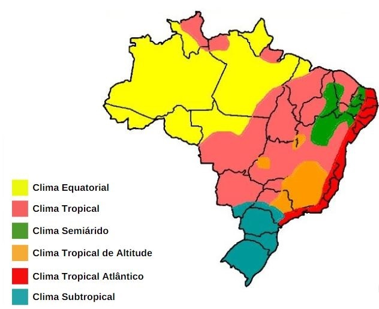

Climas do Brasil
Buscamos. Para um futo Os climas do Brasil são bastante diversificados devido à extensão territorial e as diferentes características de cada região. Os climas do Brasil são: tropical, equatorial, tropical de altitude, semiárido, tropical atlântico e subtropical. O clima corresponde às variações do tempo em um determinado local e diversos fatores influenciam sua dinâmica, como por exemplo, a formação vegetal, as correntes marítimas, o relevo e as massas de ar. A maior parte do Brasil está localizada entre os trópicos de câncer e capricórnio e por esse motivo é denominada intertropical. Em geral, as áreas intertropicais são de clima quente e úmido e a amplitude térmica se reduz à medida que se aproxima da linha do Equador.
Tipos de clima do Brasil
Clima tropical
O clima tropical é semi-úmido e ocorre na região central do Brasil, predominantemente no Centro-Oeste. Esse clima tem estações bem definidas, com invernos amenos e secos, e verões quentes e chuvosos. A temperatura média é superior a 20º C e o índice pluviométrico varia entre 1.000 mm e 1500 mm por ano.
Clima Equatorial
O clima equatorial acontece nas áreas próximas à linha do Equador. Sua área corresponde à Amazônia Legal e abrange os seguintes estados: Amazonas, Acre, Amapá, Pará, Rondônia e partes do Maranhão, Roraima e Mato Grosso. Caracterizado por clima quente e úmido, com temperaturas médias entre 24º C e 26º C. A umidade do ar é elevada e as chuvas são abundantes, podendo atingir cerca de 2.500 mm por ano.